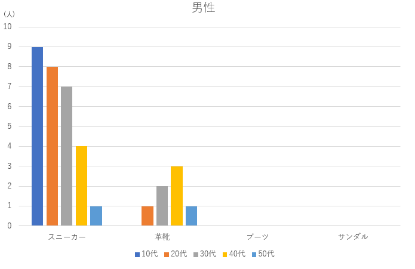
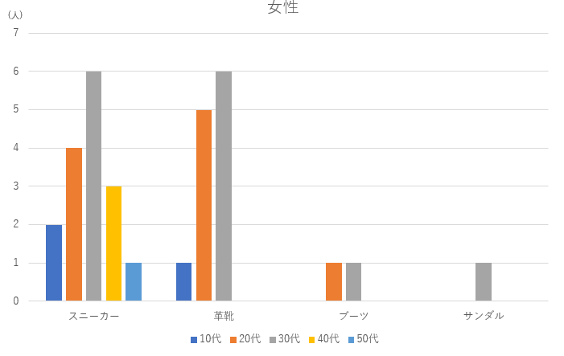
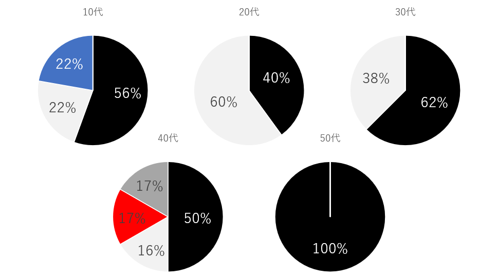
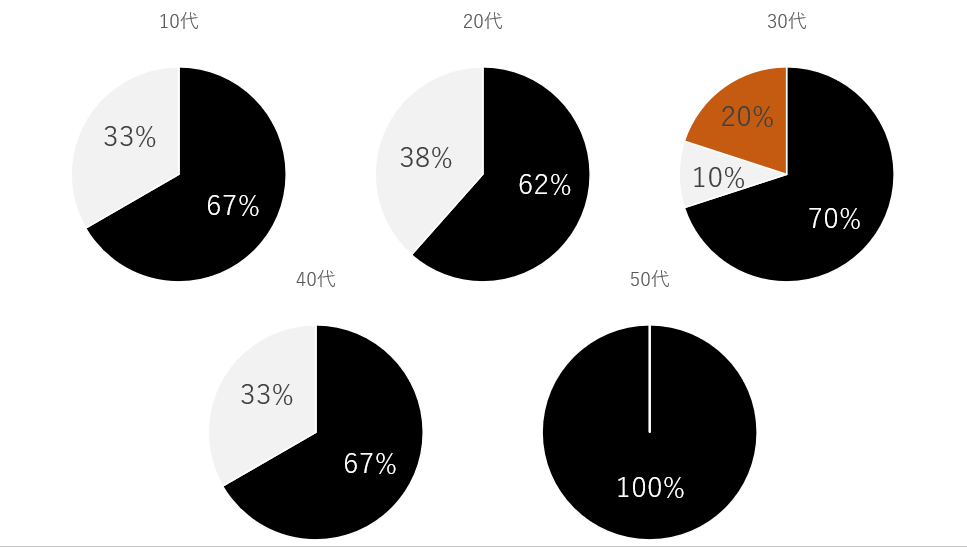

観察内容：靴の種類・色と性別・年齢の関係性
観察経路：下記添付画像の通り

観察実施日時：10月18日 赤線上→14時～14時15分 青線上→14時30分～14時45分
観察方法：メンバー１名がスマートフォンにより撮影。
撮影された動画を後日集計した。
男女・年代別に集計した靴の種類について
今回の観察では、男性35名・女性31名を調査した。
撮影した動画に写っていた方の年代は男性、女性共に（推測になってしまうが）下が10代、上が50代だった。
靴の種類の分類は、定点観察時同様、「スニーカー」「革靴」「ブーツ」「サンダル」とする。
以下が調査結果である。
靴の種類の分類は、定点観察時同様、「スニーカー」「革靴」「ブーツ」「サンダル」とする。
以下が調査結果である。

圧倒的にスニーカーが多く見受けられる。観察を行ったのがお昼過ぎということもあり、スーツ姿のサラリーマンよりも、子供連れや散歩をしている方が多く居た印象。
とは言うものの、みなとみらいには多くのオフィスビルが建ち並んでいるためか、スーツを着て革靴を履いている男性も、ちらほら居た。
スニーカーと革靴の分布を見ると、スニーカーは年代が高くなるごとに人数が減少するのに対し、革靴は20代、30代と人数が増加し、40代が最も多いことが分かる。
カジュアルな印象を持つスニーカーは歳を重ねるにつれ避けられ、逆にフォーマル感のある革靴は30代、40代と年齢が上がるにつれ好まれる傾向にある。
年齢を重ねると人間は周りから、より大人らしく見られたいという思考にあるのかもしれない。
また、移動観察では、ブーツやサンダルを履いた男性は確認できなかった。
とは言うものの、みなとみらいには多くのオフィスビルが建ち並んでいるためか、スーツを着て革靴を履いている男性も、ちらほら居た。
スニーカーと革靴の分布を見ると、スニーカーは年代が高くなるごとに人数が減少するのに対し、革靴は20代、30代と人数が増加し、40代が最も多いことが分かる。
カジュアルな印象を持つスニーカーは歳を重ねるにつれ避けられ、逆にフォーマル感のある革靴は30代、40代と年齢が上がるにつれ好まれる傾向にある。
年齢を重ねると人間は周りから、より大人らしく見られたいという思考にあるのかもしれない。
また、移動観察では、ブーツやサンダルを履いた男性は確認できなかった。
次に女性の分布を見る。

スニーカーに注目すると、30代が最も多いことが分かる。これは、小さいこどもを連れた女性が多かったことが起因しているのだろうと思う。
革靴を履いている女性のほとんどが仕事中で、オフィスカジュアルな服装の方が多かった。
男性には見られなかったブーツやサンダルも、女性には見受けられた。
一言にサンダルといっても、作りはしっかりとしており、フォーマルな印象を受けるもので、みなとみらいの敷居の高さを感じた。
革靴を履いている女性のほとんどが仕事中で、オフィスカジュアルな服装の方が多かった。
男性には見られなかったブーツやサンダルも、女性には見受けられた。
一言にサンダルといっても、作りはしっかりとしており、フォーマルな印象を受けるもので、みなとみらいの敷居の高さを感じた。
靴の色と性別・年齢の関係
性別、年齢で、靴の配色に差が生じるのか調査した。
以下の画像は、男性の靴の色を年代別に集計した結果であり、円グラフの塗りつぶした色が今回調査した靴の色である。

基本的には、白色か黒色の靴を履いている人がほとんどだった。
40代はモノクロ色の他に、赤色やグレーといった色も見受けられ、お洒落な雰囲気のおじさまもいることが分かる。
しかし、全体的に調査の対象者数が非常に少なく、信憑性にかけるものとなってしまった。
40代はモノクロ色の他に、赤色やグレーといった色も見受けられ、お洒落な雰囲気のおじさまもいることが分かる。
しかし、全体的に調査の対象者数が非常に少なく、信憑性にかけるものとなってしまった。
女性の色の割合は以下の通りである。

こちらも男性と同様、黒色や白色の靴が多い。
男性との違いといえば、全ての年代の半数以上が黒色の靴を履いているところだ。
落ち着いた雰囲気を与えられる黒色は女性に好まれるのかもしれない。
男性との違いといえば、全ての年代の半数以上が黒色の靴を履いているところだ。
落ち着いた雰囲気を与えられる黒色は女性に好まれるのかもしれない。
まとめ
今回は、男女・年齢で靴の種類や色に違いが生じるのか、移動観察にて調査した。
男女で共通していたところとしては、ひとりひとり自分のライフスタイルに合わせた靴の形状・色を選択していることだ。
また、その人が周りからどのように思われたいのか、靴を観察する事により推測できる事が分かる。
靴の種類については、概ね得られる情報は多かったが、色については、より多くの人を観察すべきだった。
今後、調査や観察をする機会があれば、より多くの人を分析し、より信憑性の高い資料を作りたい。
男女で共通していたところとしては、ひとりひとり自分のライフスタイルに合わせた靴の形状・色を選択していることだ。
また、その人が周りからどのように思われたいのか、靴を観察する事により推測できる事が分かる。
靴の種類については、概ね得られる情報は多かったが、色については、より多くの人を観察すべきだった。
今後、調査や観察をする機会があれば、より多くの人を分析し、より信憑性の高い資料を作りたい。